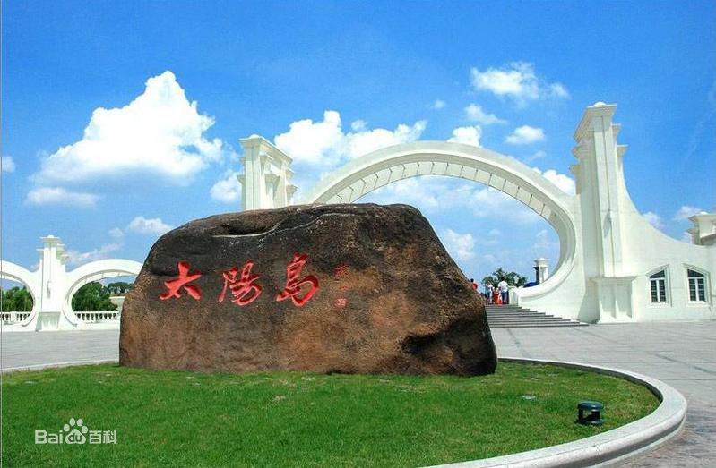
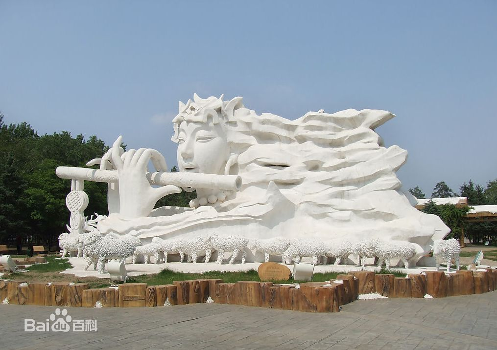
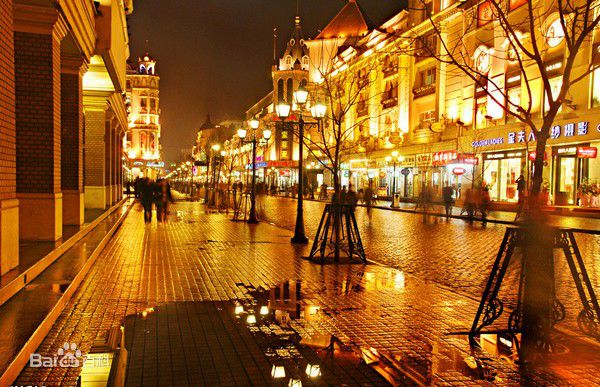
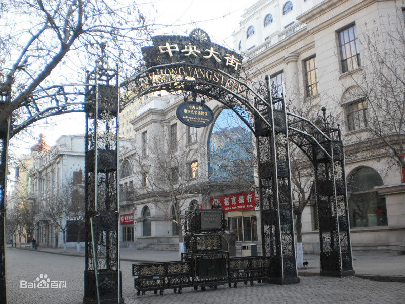
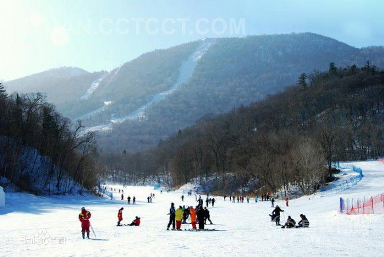
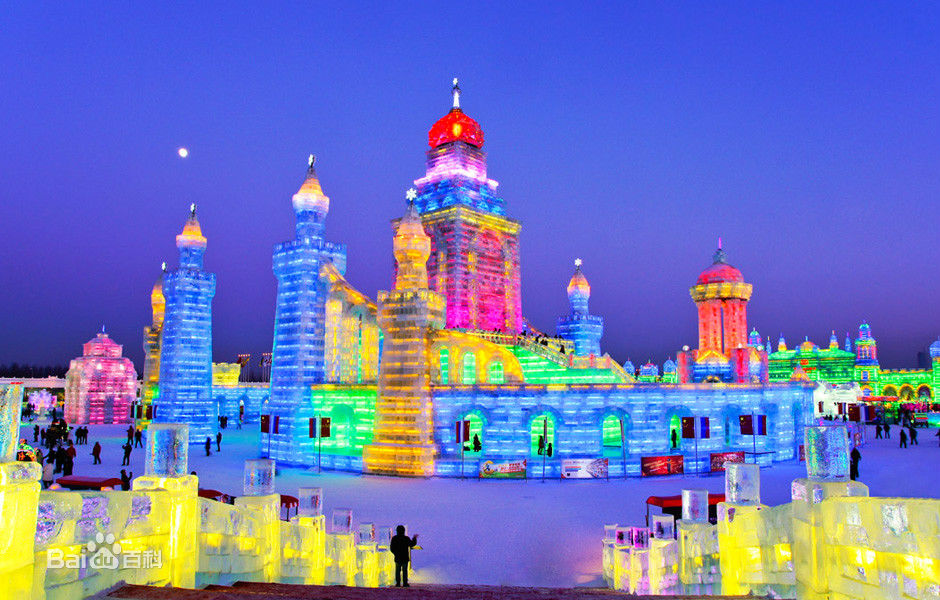
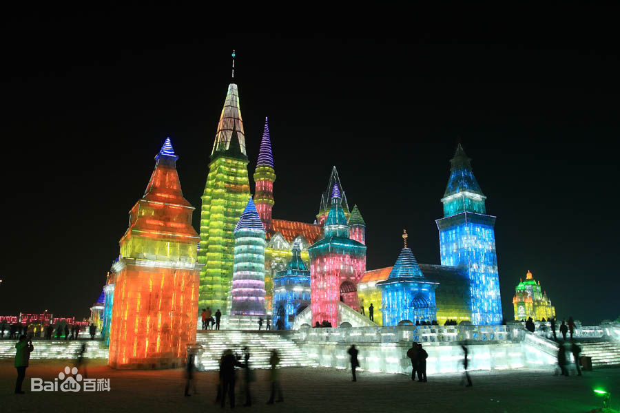

著名景点：太阳岛、中央大街、亚布力滑雪场、冰雪大世界、中华巴洛克
一．太阳岛 （黑龙江省哈尔滨市太阳岛）
太阳岛坐落在黑龙江省哈尔滨市松花江北岸，总面积为88平方公里，其中规划面积为38平方公里，外围保护区面积为50平方公里。太阳岛是一处由冰雪文化、民俗文化等资源构成的多功能风景区，也是中国国内的沿江生态区。

二．中央大街 （黑龙江省哈尔滨市中央大街）
中央大街是中国东北很繁盛的一条商业步行街，北起江畔的防洪纪念塔广场，南接新阳广场，长1400米。这条长街始建于1900年，街道建筑包罗了文艺复兴，巴洛克等多种风格的建筑71栋。

三．亚布力滑雪旅游度假区
亚布力滑雪旅游度假区是国家AAAA级景区，位于尚志市亚布力镇东南20公里，距哈尔滨市197公里，距牡丹江市90公里，301国道支线直达景区。度假区由长白山脉张广才岭的三座山峰组成，即海拔1374.8米的主峰大锅盔山、海拔1100米的二锅盔山、海拔1000米的三锅盔山。
四．中国•哈尔滨冰雪大世界
中国哈尔滨冰雪大世界始创于1999年，是由哈尔滨市政府为迎接千年庆典神州世纪游活动，凭借哈尔滨的冰雪时节优势，而推出的大型冰雪艺术精品工程，展示了北方名城哈尔滨冰雪文化和冰雪旅游魅力。
